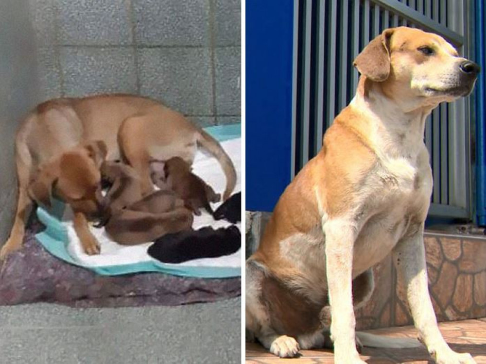
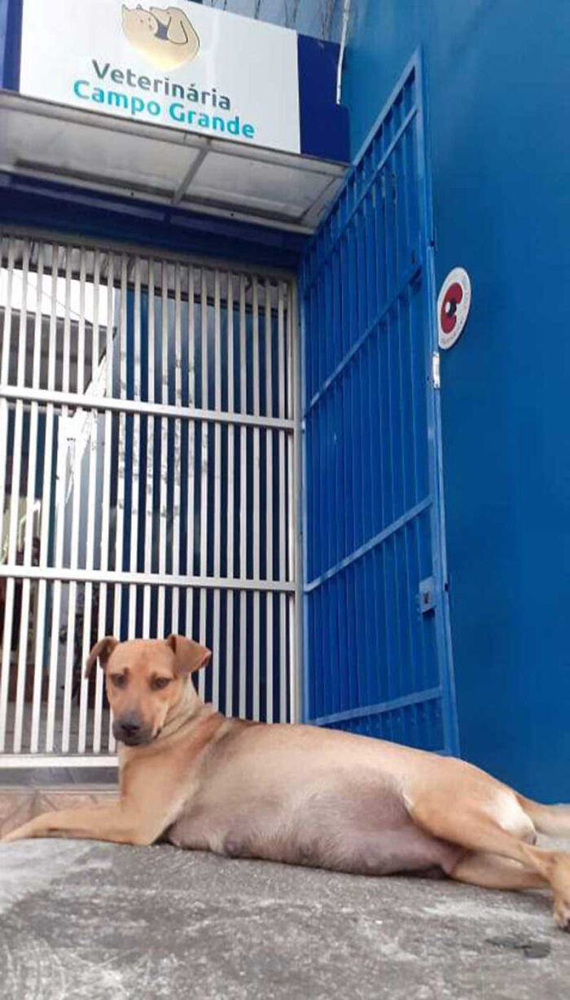
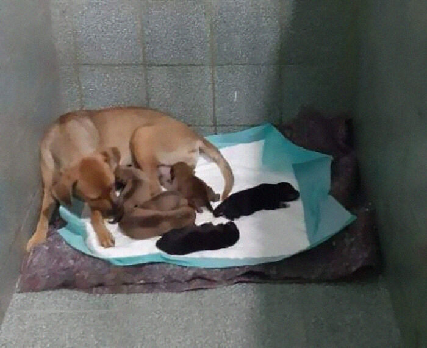
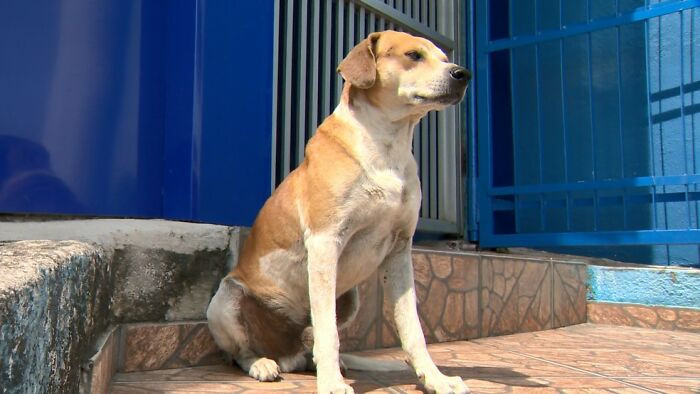
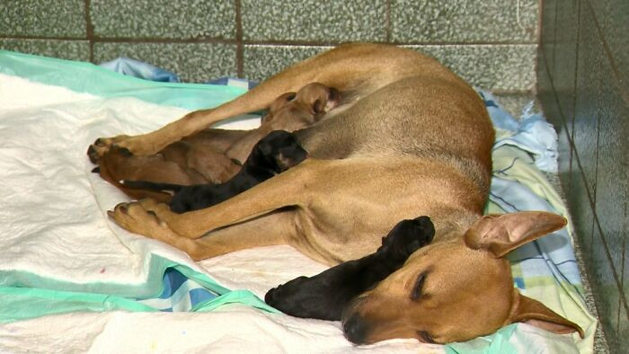

|
|
Зурхай | Цаг агаар | Валют ханш | |||||
| НИЙГЭМ | УЛС ТӨР | ЭРҮҮЛ МЭНД | ЭДИЙН ЗАСАГ | БОЛОВСРОЛ | СПОРТ | СОЁЛ УРЛАГ | КОВИД-19 | |
|---|---|---|---|---|---|---|---|---|
| Б.Сондор Ангилал: Дэлхийд |
Дөнгөж төрсөн гөлөгнүүд болон эхийг нь эмнэлгийн гадаа тэвчээртэй хүлээсэн эцэг нохой |
Та дээрх холбоосууд дээр дарж, өөрт хэрэгтэй мэдээллийг авна уу. |
||||||
Өглөө, Өдөр, Орой |
 | Шинэ мэдээ:
|
||||||
| Саяхан Бразилийн Эспирито Санто мужийн Кариакика хотод нэгэн хачирхалтай үйл явдал болжээ. Эзэнгүй нэгэн нохой мал эмнэлгийн үүд рүү явж, гадаах довжоон дээр хэвтэж байсан нь камерт бичигджээ. | ||||||||
Өдөр бүр тантай хамт |
||||||||
Хамгийн түргэн шуурхай |
||||||||
Үнэн бодит |
||||||||
Мэдээ мэдээллийг |
||||||||
| Тус эмнэлгийн малын эмч Родригес де Оливейра нохойг хараад хээлтэй, гөлөглөх гэж байгааг анзаарч, эргэлзэлгүйгээр эмнэлэгт хэвтүүлсэн байна. Түүнд Амига (найз гэсэн утгатай) хэмээн нэр өгсөн ба тэрээр аюулгүй орчинд эмчийн асрамжид зургаан хөөрхөн гөлөг төрүүлжээ. Нэг үгээр Амига төрөх дөхсөн үедээ хаашаа явах ёстойгоо, гөлөгнүүдээ эрүүл саруул байлгахын тулд юу хийх ёстойгоо сайн мэддэг нохой байв. | ||||||||
Газар дээрээс нь эх сурвалжтай |
 | |||||||
Гого хамт олноос |
 | |||||||
| Гэнэтийн явдал үүгээр дууссангүй. Гөлөгнүүд төрөх үед болон төрсний дараа тэдний эцэг нохой (малын эмч нарын туршлага дээр үндэслэсэн таамаглалын дагуу) эмнэлгийн гадна тэвчээртэй хүлээж байв. | ||||||||
Хүлээн аваарай |
 | |||||||
Нохдын гэр бүл одоо эрүүл саруул байгаа ба сайн эзэнтэй болохоо хүлээж байгаа аж. Энэхүү үйл явдал нь амьтад бидний бодож байгаагаас илүү ухаантай төдийгүй зарим мал эмнэлгийн ажилтан эгэл жилийн баатар болохыг энгийнээр харуулжээ. Малын эмч хээлтэй нохойг гудамжинд орхиж болох байсан ч тэр тэгээгүй. Тэрхүү өдөр эмч ажлаасаа түр чөлөө авч, гөлөгнүүдийг төрөхөд нь гардан тусалжээ. Тэрээр үүнийхээ төлөө цалин аваагүй ба сайхан сэтгэлийн үүднээс хийжээ. |
Монгол улс |
|||||||
| гэж хүсье! |  | |||||||
Гэрийн тэжээвэр амьтан бол маш их үүрэг хариуцлага бөгөөд уйдаад хаяж болох, хүссэн үедээ тоглох тоглоом биш гэдгийг үргэлж санах хэрэгтэй юм. Гэрийн тэжээвэр амьтан авахаасаа өмнө түүний давуу болон сул талыг анхаарч үзэх шаардлагатай. Таны хувьд болон хүүхдэд тань энэ нь зүгээр л хөгжилтэй, тоглоом шиг санагдаж болох ч тэдний хувьд энэ бол амьдрал, аз жаргал нь байдаг юм.
Эх сурвалж: BP. |
Gogo-д бүртгүүлэх |
|||||||